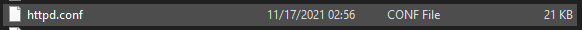

Порядок установки WEB-серверу
- З сайту apache.org качаємо архів з останнім дістрибутивом apache:
- Відкриваємо архів:
- Копіюємо усе в папку apache:
- Заходимо в папку conf:
- Відкриваємо httpd.conf:

- Прописуємо пусть за замочванням до папки серверу:
- Запускаємо сервер:
- Працює!
- З сайту php.net качаємо архів з останнім дістрибутивом php8:
- Копіюємо усе в папку php8:
- Відкриваємо httpd.conf та додаємо модуль php: